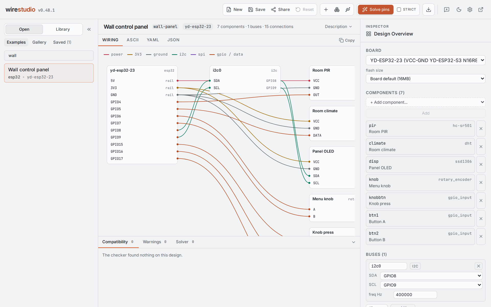
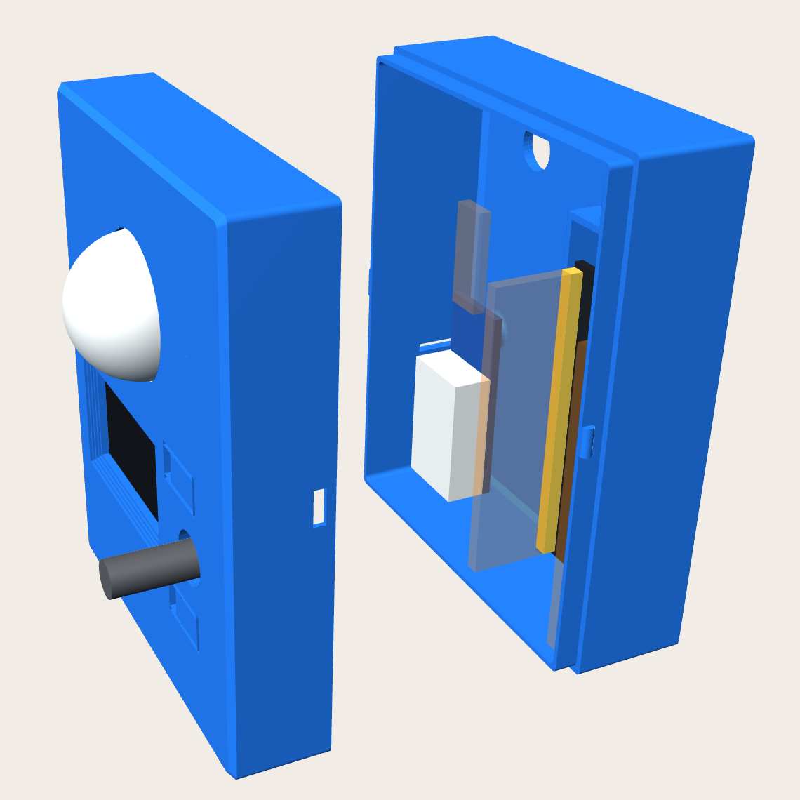

Design from intent
Describe the function, or pick parts by capability. The agent assembles a board, components and wiring that you then refine in the studio, instead of starting from a blank canvas.
Describe what an ESP32 device should do, or pick the parts yourself. wirestudio solves the pins and produces the firmware to run it and the hardware to build it: wiring, schematic, PCB, enclosure and BOM, all generated from one design file.

The bundled wall-panel example in the studio: an
ESP32-S3, a PIR, a DHT22 and an OLED + encoder module, wired and checked.
A goal or a parts pick becomes a single design.json,
the only state. Generators that are pure functions of that file
produce the software that runs the device and the hardware you build.
esphome config on each PR
verified
cfg.json from the solved pins
verified
code.py / main.py
verified
.kicad_sch, opened by real KiCad in CI with ERC
verified
.kicad_pcb · Freerouting · DRC · Gerber, drill, CPL, BOM
verified
verified means a CI or nightly job runs the output through the tool that consumes it and fails when it breaks. The status table names the job for every row.
No LLM sits in a compile or fetch path. The agent edits the design; deterministic generators produce the artifacts, so a device is reproducible, diffable and cheap to regenerate.
The enclosure generator reads the design, not just the board outline. Displays, knobs, lenses and buttons get openings in the lid and posts behind it; floor parts get standoffs; the board gets a cradle and its port cutouts; a wall-mount option adds keyholes. Room for headers and jumper wires is part of the layout.
This is the wall-panel example as generated. It was
printed in PETG and fitted to its board and parts before 1.0.

Describe the function, or pick parts by capability. The agent assembles a board, components and wiring that you then refine in the studio, instead of starting from a blank canvas.
Assigns legal GPIOs and reports boot-strap pins, ADC2 with WiFi, voltage mismatches, missing pull-ups and locked-pin conflicts before anything is flashed.
Every bundled example runs through upstream
esphome config on each change, with a nightly
compile. Secrets stay in secrets.yaml.
Builds RadioLib firmware for US915 radio boards, flashes it, provisions the device in ChirpStack and surfaces its sensors and GPS as Home Assistant entities.
Writes a .kicad_sch and a placed
.kicad_pcb, autoroutes with Freerouting and
packages Gerber, drill, CPL and BOM for the fab.
ESPHome, Tasmota, LoRaWAN, Meshtastic, CircuitPython and MicroPython flash over WebSerial from the browser. Official release images are fetched through the studio.
Track the parts drawer, check a design's BOM against it, accept ranked substitutes for what is missing, and get a buy list for the rest.
62 tools over the Model Context Protocol. Drive the design, library, fab and hardware tools from Claude Code or Claude Desktop on your subscription.
Flash and provision boards on a bench elsewhere on the network. The project's own bench runs a hardware gate every night against real boards.
Hand finished YAML to an ESPHome dashboard or to fleet-for-esphome for compile and OTA, with the build log streamed back.
Components and boards are YAML files carrying the electrical facts ESPHome does not: pins, passives, current draw, footprints and enclosure geometry. Add your own in the studio.
A design saved under 1.0 loads under every 1.x. Older documents and stores migrate themselves on open.
The Docker image carries the API server and the web UI in one process.
# studio at http://localhost:8765
$ docker run --rm -p 8765:8765 \
-v wirestudio-data:/data \
ghcr.io/moellere/wirestudio:1.0.0
# or from PyPI
$ pip install wirestudio
$ python -m wirestudio.api
Add -e ANTHROPIC_API_KEY=... to enable the built-in
agent; everything else works without it. The
README
covers the CLI, the
deployment guide
covers image tags and Kubernetes, and
the MCP guide
covers editor setup.